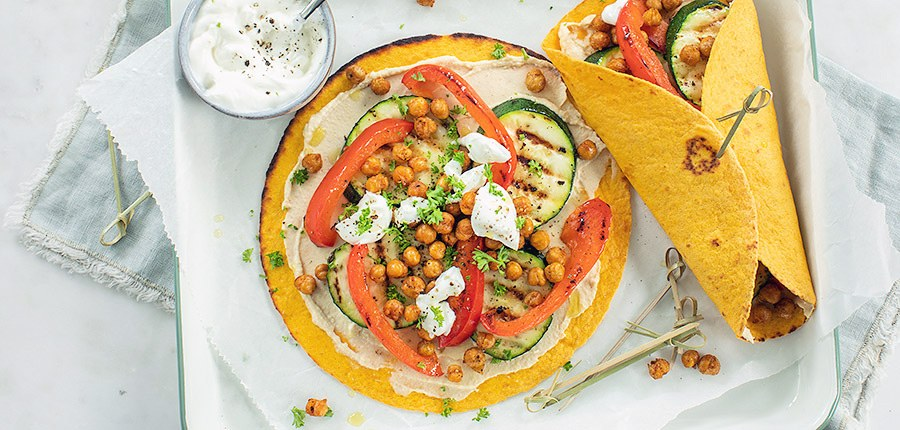
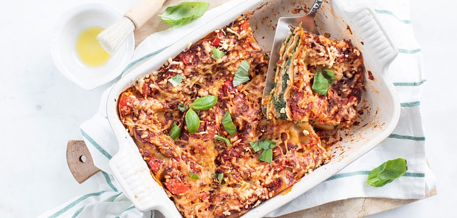
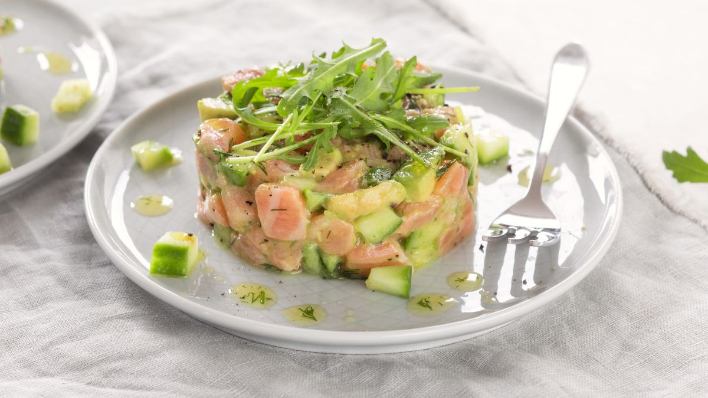

Recepten

Wraps met gezonde groenten
Ingrediënten:
- 5 wraps (groente)
- 5 eetlepels hummus
- 265 gr kikkererwten
- snufje peper en zout
- snufje paprikapoeder
- snufje komijn
- 1 paprika
- 1 courgette
- olie
- yoghurt (plantaardig)
Bereiding:
- Verwarm de oven op 200 graden. Laat de kikkererwten uitlekken en de droog. Doe ze in een kom en voeg een klein beetje olie met een snuf peper, zout, paprikapoeder en komijn. Schep door elkaar en rooster ze ca 20 minuten minuten in de oven iets krokant. Je kunt ze ook 10 minuutjes in de Airfryer doen.
- Snijd de courgette in plakjes en paprika in reepjes. Bestrijk ze met een beetje olie. Verhit een grillpan en rooster de paprika en courgette.
- Verwarm de wraps. Besmeer ze met hummus. Beleg daarna met de geroosterde kikkererwten en gegrilde groenten. Vouw de wraps dicht, gebruik eventueel een prikkertje.
- Serveer de wraps met een bakje yoghurt als sausje.
- Tip: check voor een vegan recept of de hummus en wraps vegan zijn. Vervang de hummus ook eens door guacamole.
Bron: leukerecepten.nl

Gezonde lasagne met spinazie
Ingrediënten:
- 12 volkoren lasagnebladen
- 400 gr hüttenkäse
- 800 ml tomatenblokjes
- 2 theelepels Italiaanse kruiden
- snufje peper en zout
- 250 gr champignons
- 400 gr spinazie
- 1 paprika
- handje verse basilicum
- 1 ui
- 2 tenen knoflook
- 1 handje 30+ kaas
Bereiding:
- Snipper de ui en knoflook. Snijd de champignons in plakjes.
- Fruit de ui en knoflook aan in een pan met een klein beetje olie of boter. Voeg de champignons toe.
- Snijd de paprika in kleine blokjes en bak ook mee. Voeg dan de tomatenblokjes toe en breng op smaak met peper, zout en Italiaanse kruiden. Voeg ook wat verse basilicum toe in stukjes.
- Laat dit mengsel ca. 20 minuutjes pruttelen. Roer af en toe door.
- Verwarm de oven voor op 180° graden.
- Bak in een andere grote pan de spinazie beetje bij beetje tot deze geslonken is. Laat de spinazie goed uitlekken in een vergiet en doe vervolgens in een kom. Schep de Hüttenkäse erdoor en breng het mengsel goed op smaak met peper en zout.
- Vet de ovenschaal in.
- Verdeel een klein beetje van de tomatensaus over de bodem. Leg hier 3 lasagnebladen op. Verdeel hier de helft van het spinaziemengsel. Dek af met lasagnebladen. Verdeel hier ongeveer de helft van de tomatensaus over. Dek af met lasagnebladen. Hier gaat de rest van de spinazie overheen. Dek weer af met lasagnevellen en als laatste de tomatensaus.
- Bestrooi met een beetje kaas en zet de gezonde(re) lasagne ca. 45 minuten in de oven.
Bron: leukerecepten.nl

Zalmtartaar
Ingrediënten:
- 300 gr verse zalm
- 0.5 komkommer
- 1 avocado
- 0.5 citroen
- 3 eetlepels olijfolie
- 2 theelepels verse dille
- 1 snufje peper en zout
- 1 handje rucola
Bereiding:
- Snijd de zalm, halve komkommer en avocado in kleine gelijke blokjes.
- Houd een paar blokjes komkommer apart en doe de rest samen met de zalm en avocado in een kom.
- Meng met het sap en de rasp van de halve citroen.
- Hak de verse dille fijn en meng met de olijfolie en een snuf peper en zout.
- Houd een beetje van de dressing apart en meng de rest met het zalmmengsel.
- Leg een kookring op een bord en doe hier ¼ van het mengsel in en druk lichtjes aan. Verwijder de ring en herhaal dit nog 3 keer.
- Garneer de zalmtartaar met wat rucola.
- Druppel een beetje van de dilledressing eromheen en verdeel wat blokjes komkommer erover.
- Tip: door het citroensap verkleurt de avocado minder snel, maar desondanks is het aan te raden om deze zalmtartaar maximaal 2 uur van tevoren te bereiden en te bewaren in de koelkast.